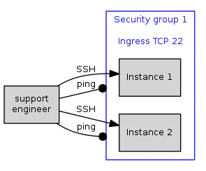
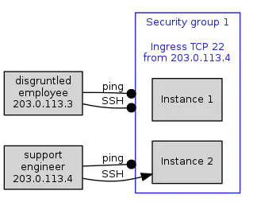
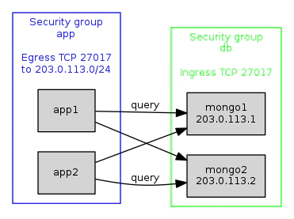
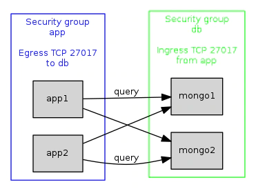
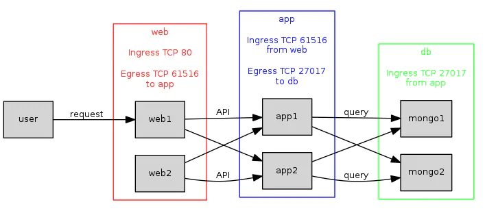
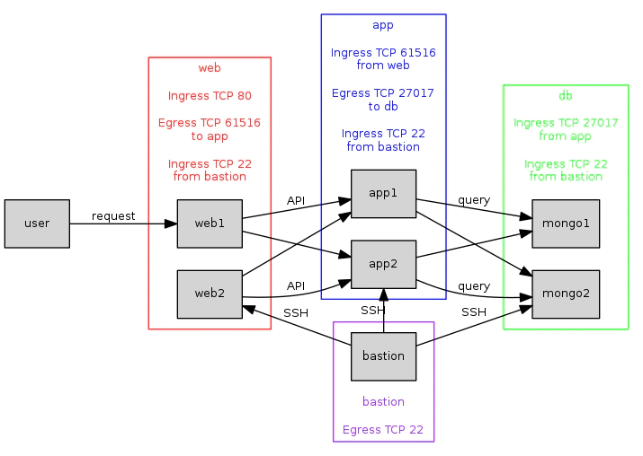

Illustrating Uses of IBM Cloud Security Groups
I wrote this high-level public-facing guide while employed by IBM, creating the security groups feature for IBM Cloud. It used to reside on the IBM blog, but has recently been replaced by newer content, so I've preserved it here for posterity.
This article illustrates a few possible uses of IBM Cloud Security Groups, a per-instance firewall for IBM Cloud virtual instances.
Why Use Security Groups?
Security groups firewall your IBM Cloud applications from nefarious network traffic, protecting you and your company from the efforts of “industrious users” trying to bring down your application, or make off with your customer's credit card details. If those sound like sub-optimal outcomes for your situation, read on…
Allow Incoming SSH Connections
The simplest use of security groups is to allow a single type of network connection to your instances, blocking all other traffic. For example, to allow only incoming SSH connections, which are TCP connections on port 22. All other types of traffic, such as ICMP ‘ping' connections, or TCP connections on other ports, are blocked. Fig 1. A security group configured to allow incoming SSH

Fig 1. A security group configured to allow incoming SSH.
When instances 1 & 2 are added to your security group, firewalls are created directly on those instances,configured to allow or deny the corresponding traffic. Hence, your support engineer can create SSH connections, but cannot send arbitrary network traffic.
Allow SSH from a Specified IP Address
The above scenario allows SSH connection attempts from any IP address. To increase security, you might only allow connections from a particular instance. Fig 2. A security group configured to allow incoming SSH connections (TCP port 22) from a particular IP address.

Fig 2. A security group configured to allow incoming SSH connections (TCP port 22) from a particular IP address.
The security group has been configured with the IP address used by a support engineer – the single instance that is authorized to make a connection. Connections from other instances are blocked.
As well as allowing traffic from a single IP address, security groups can be configured with a CIDR block, to allow traffic from all instances on that subnet. Fig 3. A security group configured to allow incoming SSH connections (TCP port 22) from all instances on a given subnet.

Fig 3. A security group configured to allow incoming SSH connections (TCP port 22) from all instances on a given subnet.
The diagram shows instances on an authorized subnet (deploy1 & deploy2), representing a project CI/CD infrastructure, all being able to make SSH connections to our protected instances, for example to deploy updates to our application. Other instances, such as an enterprising hacker, are blocked.
Allow Application Instances to Access a Distributed Data Store
Another use case would be to allow application servers to access the nodes of a distributed data store. To do this, we'll make a few changes to the above security group configuration.
Firstly, we modify the open port from SSH's 22, to MongoDB's default query API port of 27017.
Secondly, security group 1 is now allowing the creation of outgoing network connections, from our application instances, where previously it was allowing incoming connections. Security group rules can manage traffic in either direction.
Thirdly, we don't want our data store instances to be unprotected, so we'll put them into a security group of their own. Since there's now two security groups, we'll give them names: “app” and “db”.
For now, security group “db” allows all incoming MongoDB queries (TCP connections on 27017), without restricting the IP addresses allowed to make connections. We'll fix that soon. Fig 4. Two security groups configured to allow application servers to send queries to MongoDB nodes on a subnet.

Fig 4. Two security groups configured to allow application servers to send queries to MongoDB nodes on a subnet.
For clarity, these diagrams don't show the many connections which are blocked by this setup - which are, of course, the whole point of security groups. On the above diagram, blocked connections would include:
-
On app instances:
- All incoming connections.
- Outgoing connections that aren't TCP, or are on the wrong port.
- Outgoing connections to anything other than a DB instance.
-
On DB instances:
- All outgoing connections.
- Incoming connections that aren't TCP, or are on the wrong port.
This setup does have a couple of problems. It relies on our MongoDB instances all residing on a single subnet. Worse, as mentioned earlier, it allows any IP address in the world to make queries to MongoDB. We'll fix both of these next.
Using Remote Groups to Specify Arbitrary IP Addresses
Specifying allowed instances using a CIDR block can be inappropriate. It's often preferable to specify a set of arbitrary IP addresses instead. We can do this by using a second security group – known as a remote group – to contain the set of allowed instances. Our first security group can then refer to the remote group to specify which instances are allowed.
In our example above, we would modify the “app” security group by dropping the CIDR block, and replacing it with a reference to “db” as a remote security group.
Similarly, we would modify the “db” group to use “app” as a remote group, only allowing connections from the members of that group. Fig 5. Two security groups configured to allow application servers to send queries to MongoDB nodes using remote groups.

Fig 5. Two security groups configured to allow application servers to send queries to MongoDB nodes using remote groups.
This has several advantages. Firstly, our data store no longer accepts malicious queries from hackers all over the internet – only from our app instances.
Secondly, our data store instances no longer need occupy a subnet, they can have arbitrary IP addresses.
Because the security groups now specify allowed hosts by referencing each other, when the members of either group changes, the instance level firewalling rules on all instances are updated automatically, to allow or deny traffic based on the new membership.
This configuration starts to show what makes security groups a flexible, dynamic, low-maintenance solution.
Accepting Web Requests
Our application instances aren't any use without a web front end. We put our web instances into their own security group (“web”), which allows incoming requests from users on the web, and outgoing API requests to our app instances, on port 61516.
Similarly, we need to add a second rule to the “app” security group, to allow incoming requests from “web”. Fig 6. A traditional three-tier application using remote security groups.

Fig 6. A traditional three-tier application using remote security groups.
The more types of server we add to our setup, the more benefit “remote” groups provide, by minimizing setup configuration, and by automatically keeping firewalling rules up to date when group membership changes.
A future blog post will discuss how to set up this three-tier scenario, and describe details such as how to use multiple network interfaces on an instance, such as the web instances which will use a public IP address exposed to users, versus a private IP exposed to the API instances.
Add a Bastion
We need some way to access our servers, so that we can, for example, deploy new versions of our application. Commonly this is achieved using a bastion server, which provides a single, carefully hardened point of access.
Here we add a bastion server, and modify all our security groups to allow SSH access from the bastion to all our instances. The bastion instance itself would be configured to only allow incoming connections from the appropriate points in a CI/CD infrastructure (not shown.) Fig 7. Adding a bastion server with SSH access to all other instances.

Fig 7. Adding a bastion server with SSH access to all other instances.
This is starting to look like a realistic setup for a modest but scalable multi-tier application.
Conclusion
Security groups are a flexible and powerful way to firewall network traffic to and from your system's instances. We've shown how they might be used in a few typical scenarios, and hopefully demonstrated that they are flexible enough to accommodate many others. For more information, see Getting Started with Security Groups.
Jonathan Hartley
Senior Cloud Developer